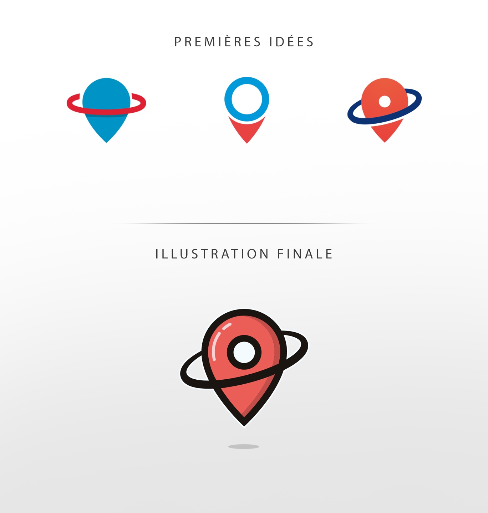
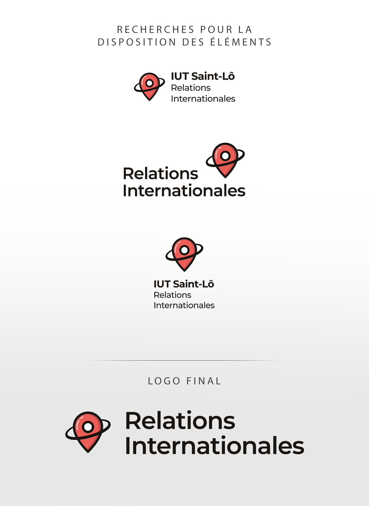

Arcelus Quentin
Portfolio
À propos
Contact
Relations
Internationales
WEB - PRINT
2019
Organisme d'aide aux étudiants internationaux
- Conception d'une identité visuelle complète (logo et charte graphique) basée sur la charte graphique du site de l'IUT de Saint-Lô.
RETOUR AU PORTFOLIO

